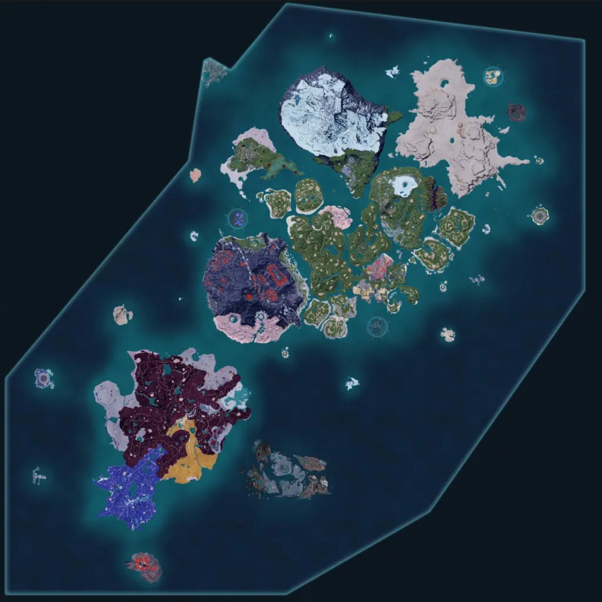

🧭
Wo stehst du – und was jetzt?
Hake Türme/Meilensteine ab, sobald du sie geschafft hast, oder klicke einen Punkt an, um direkt dorthin zu springen. Dein Fortschritt wird lokal in diesem Browser gespeichert.
DEIN STANDARD-SETUP
Teams nach deinem Levelbereich
Wähle deinen ungefähren Levelbereich. Du bekommst ein vollständiges Kampfteam, ein Roaming-/Erkundungsteam und ein Base-Team. Spezialteams kommen darunter nur dann dazu, wenn du sie wirklich brauchst.
Kampf-Teams und Base-Worker an einem Ort. Wähle unten ein Thema – die Ansicht wechselt sofort, ohne dass du zwischen Reitern hin- und herspringen musst.
🎒 Was nehme ich mit, wenn ich losziehe?
Deine Base-Worker bleiben immer daheim – das hier ist deine Reise-Party, also die Pals, die tatsächlich in deinen aktiven Slots mitkommen. Wechsle die Party an der Palbox, bevor du losziehst, statt ein einziges Allround-Team für alles zu bauen.
| Vorhaben | Early Game | Mid Game | Late Game |
|---|---|---|---|
| ⚔️ Bosskampf / Turm |
Cattiva Allrounder
Foxparks Fire-DPS
Daedream Burst
Vixy Utility
Rushoar Ground-Tank
Robinquill Ranged
|
Dinossom DPS
Lyleen Healer
Anubis Ground-Tank
Foxcicle Ice-Ranged
Reptyro Cryst Ice-Tank
Eikthyrdeer Mount/Transport
|
Shadowbeak Tank
Jormuntide Ignis AOE-DPS
Jetragon Burst/Mount
Paladius Defensive
Frostallion Ice-DPS
Necromus Dark-DPS
|
| 🌾 Farmen / Ressourcen |
Vixy Sphere-Finder
Rushoar Paladium-Dungeons
Digtoise Mining
Cattiva Lückenfüller
|
Anubis Mining/Handiwork
Univolt Farm-Route-Speed
Grintale XP-Re-Fight
|
Jetragon Hotspot-Hopping
Astegon Ancient-Tech-Mining
Anubis Handiwork-Support
|
| 🏛️ Dungeon |
Rushoar Ground-Tank
Foxparks Fire-AoE
Daedream Crowd Control
Digtoise Paladium-Adern
|
Anubis Tank/Damage
Lyleen Sustain/Heal
Univolt Repositionierung
Blazehowl Fire-AoE
|
Necromus Einzelziel-Damage
Jormuntide Ignis Fire-AoE
Orserk Buff-Support
Frostallion Mount/Cooling
|
| 🎯 Fangen |
Foxparks Burn-DoT
Vixy Sphere-Nachschub
Lifmunk Team-Filler
|
Grintale HP-Whittle
Eikthyrdeer Chase-Mount
Univolt Speed
|
Jetragon Chase-Speed
Prickster Poison-DoT
Silvegas Sicheres Heranpirschen
|
| ⚔️ Kampf | 🐾 Einzel-Palsnach Spielphase | 🤝 Team-Synergien& Turmboss-Matchups | 🎒 Zweck-TeamsFarmen / Dungeon / Fangen |
|---|---|---|---|
| 🏭 Base-Worker | 📅 Nach Spielphase& Kombos | 🐾 Alle Pals & Skills→ eigener Reiter, filterbar |
Early
Early Game (Level 1-20)
Deckt Fire/Dark/Normal/Ground/Grass ab – Rushoar (Ground) knackt Turm 1 (Zoe & Grizzbolt, Electric), Robinquill liefert sicheren Ranged-Schaden. Damit bist du gegen praktisch jeden frühen Gegner gewappnet.
🧬 Talente-Ziel: ATK/DEF ≥50 reicht früh völlig aus – nimm einfach, was du fängst (Talent-Tabelle: Handbuch → Pal-Basics). Passives: Musclehead/Runner mitnehmen, falls dabei, sonst nicht extra jagen. Items: Handbooks/IV-Fruits hier noch nicht einsetzen – zu knapp und die Pals werden bald ersetzt.
Stabiler Early-Game Starter mit guten Stats. Vielseitige Arbeitsfähigkeiten machen es auch als Base Worker brauchbar.
Überall in deiner Nähe zu Spielbeginn
Fire-type mit dem Partner Skill "Huggy Fire" (Feuerwerfer). Gut für Early Bosses und bietet Wärmeschutz.
Seltener in der Nähe – nachts häufiger
Dark-Type mit starken Ranged-Attacken. Beherrscht viele nützliche Skills. Nur nachts zu finden.
Suche nach glühendem purpurroten Kopf
Generiert kostenlos Ressourcen in der Ranch. "Dig Here!" findet Pal Spheres. Super für Early Game Ressourcen.
Häufig in der Nähe zu Spielbeginn
Ground-Type Wildschwein mit robustem Nahkampf. Dein früher Zugang zu Ground-Schaden – wichtig, da Turm 1 (Grizzbolt, Electric) schwach gegen Ground ist.
Häufig in offenen Grasflächen
Schießt Nüsse aus der Distanz – zuverlässiger Ranged-Schaden ohne Risiko, gut gegen Wasser/Stein/Elektro-Gegner.
Überall an Waldrändern
Mid
Mid Game (Level 20-40)
Lyleen hält das Team am Leben, Anubis/Foxcicle/Reptyro Cryst decken Ground + Ice ab – exakt die Schwächen von Turm 3 (Axel & Orserk). Eikthyrdeer sorgt für schnelles Reisen zwischen Fights.
🧬 Talente-Ziel: ATK ≥70 auf Anubis, HP/DEF ≥70 auf Lyleen – dieser Kern bleibt bis Endgame relevant. Passives: Legend + Ferocious/Swift-Trifecta anpeilen, sobald züchtbar. Items: erstes Applied Handbook gezielt auf Anubis (Handiwork/Mining) – IV-Fruits noch sparen fürs Late-Game-Team.
Mount mit Double Jump im Flug. Trägt dich über Berge und weite Strecken. Boosted Wood Harvesting wenn assigniert.
Überall in grünen Wiesen und Waldgebieten
Grass-Dragon Hybrid mit großartigem Move-Set. Deckt mehrere Typen ab und ist sehr vielseitig einsetzbar.
Überall in Gras und Sumpf-Biomen
Healing Support mit starken Grass-Attacken. Kann das ganze Team heilen und ist Late Game noch stark.
Dichte Waldbereiche überall
Ground-Type Boss mit hoher Defense. Kann gezüchtet werden (Penking + Bushi). Stark gegen Elektro und Gift.
-130, -96 (Level 47 Alpha Boss)
Zuverlässiger Ice-Ranged-Schaden, essentiell für Turm 3 (Orserk ist schwach gegen Ice). Auch stark als Cooling-Base-Worker.
Kältere Höhenlagen
Ice/Ground-Hybrid – deckt beide Schwächen von Axel & Orserk gleichzeitig ab. Robuster Frontline-Tank für Turm 3.
Variante von Reptyro, kälteren Gebieten
Late
Late Game & Endgame – World Tree / Hard-Mode-Türme (Level 45+)
Bellanoir Libero spamt Nightmare Bloom (x2,5-Multiplikator, per Partner-Skill zweimal nutzbar), Orserk gibt ihr +150% Angriff/Verteidigung, Celesdir Noct +80% oben drauf (kostet Lebenspunkte – egal dank Immortality-Passive & Life-Steal). Kein Elementwechsel nötig, funktioniert gegen praktisch jeden Hard-Mode-Turmboss unverändert.
🧬 Passives auf Bellanoir: Siren of the Void, Diamond Body (Flinch-Resistenz fürs Channel-Attack), Immortality (Lifesteal), vierter Slot flexibel (Demon God/Serenity). Items: Drone Launcher aktiviert Orserks Buff dauerhaft.
Höchster Angriffswert im Spiel + eigener Exclusive-Move Nightmare Bloom mit x2,5-Schadensmultiplikator, der per Partner-Skill ein zweites Mal ausgelöst werden kann. Mit Diamond Body (Flinch-Immunität) und Immortality (Lifesteal) praktisch die stärkste Pal-Damage-Option in 1.0 – die reguläre Bellanoir mit Nightmare Ray ist nahezu gleichwertig.
Alternativ züchtbar aus Siren of the Void-Linie
Der wohl wichtigste Support-Pal in 1.0: Jeder „Bullet"-Treffer (Pfeile, Kugeln, Raketen – auch vom Drone Launcher) gibt dem aktiven Pal +5% Angriff/Verteidigung, stapelbar bis 30x = +150% dauerhaft mit Drone Launcher im Inventar. Gehört in praktisch jedes Pal-Damage-Team, egal welches Element.
Auch als eigener Carry stark, aber wertvoller als Booster
Iron Guardian Mode: +210% Angriff UND Verteidigung für begrenzte Zeit (normale Knocklem-Variante +200%). Mit zwei Knocklem im Team abwechselnd aktiviert hast du nahezu 100% Uptime auf diesem Buff und bist quasi unangreifbar – funktioniert gegen jeden Turmboss.
Fire-Variante für Fire-Fokus, normale Variante für Ground
Vermutlich der stärkste Partner-Skill im Spiel: 9% Lifesteal für Spieler UND Pal bei jedem Treffer – macht dich in Kombination mit Headshot-Boostern (Vanwyrm Cryst, Cryolinx Terra) und Solenne quasi unsterblich, ganz ohne Dodging. Funktioniert gegen jeden Boss im Spiel, auch Ultra-Raids.
Lovander hat denselben Effekt, aber schwächere Stats
+80% Spieler-Angriff, solange alle Party-Pals unterschiedliche Spezies sind (in 1.0 mit den vielen Varianten easy zu erfüllen). Hat den alten „4x Gobfin"-Stack komplett abgelöst – gehört in jedes Spieler-Damage-Team und die meisten Hybrid-Teams.
Muss nicht selbst leveln – wirkt allein durchs Dabeisein
Wandelt deinen Spieler-Schadenstyp im Reiten zu Dragon – Standard-Baustein für reine Spieler-Damage-Builds mit mechanischem Bogen oder Plasmagewehr. Passe den Typ des Element-Swap-Pals einfach an die Schwäche des jeweiligen Bosses an (siehe Turmboss-Matchups).
Analoge Element-Swap-Pals: Pyrin (Fire), Azurobe (Water), Univolt (Electric), Frostallion (Ice)
Das komplette Palworld-Roster – alle Pals inkl. aller Elementar-Varianten (Ignis/Cryst/Lux/Noct/Terra/ Aqua/Primo/Botan/Gild/Ryu/Libero) mit Typ, Tier, Spielphase, Partner-Skill, Arbeits-Eignung und Fundort. Filterbar nach Typ, Spielphase und Guide-Empfehlung, sortierbar auch nach einzelner Fähigkeit. Pals mit dem ⭐-Badge werden an anderer Stelle im Guide aktiv als Team-Pick oder Base-Worker empfohlen.
| Pal | Typ | Tier | Phase | Partner-Skill | Arbeits-Eignung | Fundort |
|---|
🗺️
Map – Basen & Ressourcen
📍 Echte Weltkarte mit Pins. Zwischen Base-Standorten und Ressourcen-Hotspots umschalten, Pin oder Listenkarte anklicken für Details.

Positionierung basiert auf den echten Paldeck-Koordinaten – kann je nach Zuschnitt leicht abweichen.
📖
Handbuch – Pal-Mechaniken im Detail
Vier oft verwechselte Systeme: Talente = Zufalls-Potenzial beim Fang. Handbooks/Fruits = dauerhafte Item-Boosts. Breeding = neue/bessere Pals züchten. Essence Condenser = bestehenden Pal mit Duplikaten verstärken. Vorweg: ein echtes „Cloning" gibt es offiziell nicht.
🧬 Was sind Talente (IVs) und warum zählen sie beim Fangen?
Jeder Pal bekommt beim Fang/Schlüpfen drei versteckte Talent-Werte (HP, Attack, Defense, Skala 0–100) – fix, nie mehr veränderbar. Je höher, desto mehr Bonus (bis +30%) auf den Stat-Zuwachs pro Level.
📏 Welche Werte sind gut?
| Talent-Wert | Einschätzung | Was tun? |
|---|---|---|
| 90–100 | Exzellent / „perfekt" | Immer fangen, top Zuchtkandidat |
| 70–89 | Gut (ingame grün markiert) | Lohnt sich für Team & Zucht |
| 40–69 | Mittelmäßig | OK als Lückenfüller/Base-Worker |
| 0–39 | Schwach | Für Kampf/Zucht eher meiden |
⚖️ Talente vs. Pal Souls – zwei getrennte Systeme
🎲 Talente (IVs)
- Individuell, zufällig, einmalig bei Fang/Geburt
- Nicht änderbar oder aufladbar
- Nur mit Ability Glasses sichtbar
- Wirkt multiplikativ auf Stat-Zuwachs pro Level
🗿 Pal Souls (Statue of Power)
- Verbrauchsmaterial, gezielt investierbar
- +3% pro Stufe, bis Stufe 20 = +60% auf HP/ATK/DEF/Work Speed
- Kostet ca. 52 Souls pro Stat auf Max (≈208 für alle vier)
- Gegen Goldmünzen zurücksetzbar
📚 Drei verschiedene Item-Familien, oft verwechselt
„Handbook" und „Manual" klingen gleich, sind aber drei komplett getrennte Systeme:
| Item | Wirkung | Herkunft | Limit |
|---|---|---|---|
| Applied Handbook (12 Typen) |
+1 auf eine Work Suitability (Mining, Kindling, Handiwork, …), dauerhaft an den Pal gebunden | Medal Merchant (Arena), 300 Dog Coins/Stück, unbegrenzt vorrätig | Cap Level 10 je Job (natürlicher Max-Wert meist 4–8) |
| Training Manual (S/M/L/XL) |
Reine EXP-Spritze (S ≈ 200 EXP bis XL ≈ 10.000+ EXP) – kein direkter Statbonus | Syndicate-Gegner-Drops, Schatzkisten, Bellanoir-Raid | Kein Cap – wirkt wie normale EXP |
| IV-Fruits (Life/Power/Stout) |
+10 permanent auf den versteckten HP-/Attack-/Defense-Talent-Wert des Pals | Endgame-Boss-Drops (Moon Lord, Bellanoir Libero, Blazamut Ryu, Hartalis, Xenolord ~33%), Arena-Shop (100 Battle Tickets), Medal Merchant (200 Dog Coins) | Cap 100 pro Stat → max. 10 Früchte je Statwert und Pal |
🎯 Wann setze ich was ein?
Nichts davon priorisieren. Dog Coins und Materialien sind knapp – investiere sie in Basis-Ausbau statt in Items für Pals, die du eh bald ersetzt.
Erste Handbooks gezielt auf feste Basis-Spezialisten, deren Job schwer durch bessere Pals zu ersetzen ist (z.B. seltene Kindling-Pals).
IV-Fruits ausschließlich auf dein finales 3–5-köpfiges Kampfteam, da sie extrem limitiert sind. Restliche Handbooks für Base-Vollausbau.
💠 Was macht der Pal Essence Condenser?
Der Condenser (Ancient Tech Level 14) opfert Duplikate derselben Art, um einen Ziel-Pal auf bis zu 4 Sterne hochzustufen. Geopferte Pals sind unwiderruflich weg; das Rank-Level vererbt sich nicht – Nachwuchs startet immer bei ★0.
🪜 Rang-Leiter (Patch 1.0 – reduzierte Kosten)
Partner Skill Lv+1
+1 Work Suitability
Partner Skill Lv+2
+1 Work Suitability
Partner Skill Lv+3
+1 Work Suitability
Partner Skill Lv 5
Alle Work Suitabilities +1
📈 Warum das für Base-Worker so wichtig ist
Work-Suitability skaliert exponentiell: Handiwork-Output steigt von Level 5 auf 10 um das 13,5-Fache. Condensing ist der stärkste Hebel für Endgame-Automatisierung.
⚔️ Wichtigkeit für Kampf-Pals
Moderat: +20% Stats bei ★4 ist spürbar, aber keine zusätzlichen Skill-Slots. Oft relevanter: Partner-Skill auf Level 5. Lohnt sich primär fürs feste Raid-/Boss-Team – erst nachdem Passives per Zucht optimiert sind.
🗓️ Timing
Kaum Condensing. Deine aktuellen Pals werden bald ersetzt – hebe Duplikate lieber für Zucht auf.
Haupt-Kampf-/Reit-Pal auf ★2–★3 bringen. Erste Basis-Spezialisten mit guten Passives beginnen.
Volles ★4 nur fürs endgültige Team. Alternative für seltene Pals: Starfruit (~750 Dog Coins für kompletten 0→4★-Sprung ohne Zucht).
🥚 Breeding – Grundmechanik
Die Breeding Farm (ab Base-Level 19) nimmt zwei Pals unterschiedlichen Geschlechts auf, die mit Kuchen-Nachschub etwa alle 5 Minuten ein Ei legen. Zwei gleiche Arten ergeben wieder dieselbe Art, unterschiedliche Arten kombinieren sich zu einer dritten. Ausbrütezeit: 3–72 Std., je nach Ei-Größe und Temperatur-Komfort im Inkubator.
🧬 Wie werden Talente vererbt?
Pro Talent-Wert unabhängig: 30% Vater, 30% Mutter, 40% neuer Zufallswert. Selbst zwei perfekte Eltern garantieren keinen perfekten Nachwuchs (~20% Trefferquote). Strategie: mit den zwei besten Eltern züchten, besten Nachwuchs behalten, wiederholen („Zucht-Leiter").
✨ Wie werden Passive Skills vererbt?
Beide Eltern bringen zusammen bis zu 4 Passives in einen Pool, davon werden 1–4 vererbt (4 gleichzeitig ~10%). Freie Slots können mutieren. Deshalb: Eltern nur mit den gewünschten Passives ausstatten, sonst sinkt die Trefferchance.
⏱️ Breeding beschleunigen
| Maßnahme | Effekt |
|---|---|
| Vegetable Cake | Erzeugt teils 2 Eier gleichzeitig |
| Extravagant Vegetable Cake | Erhöht Mutationschance (~1% → ~3%) |
| Mushroom Cake | Verbessert leicht die resultierenden Talent-Werte |
| Special Cake | Erhöht Chance auf mehrfache Passive-Vererbung |
| Braloha im Team | Beschleunigt Zucht-Vorgänge allgemein |
| Ancient Hatchery (Tech 76) | Automatisiert Ei-Produktion & Inkubation komplett, erhöht Vererbungsrate seltener Skills |
🔗 Konkrete Early-Game-Breeding-Kette (ab Level 19+)
Die generischen Vererbungsregeln im „Breeding vs. Cloning"-Tab sind die Theorie – hier eine komplette, in der Community nachvollzogene Kette, die aus 4 früh fangbaren Basis-Pals über 11 Zuchtschritte bis zu starken Endgame-Base-Workern (Anubis, Astegon) führt.
| Start-Pal | Fundort | Gewünschtes Geschlecht |
|---|---|---|
| Warsek | Schwarzmarkt-Händler in Startregion (ab Lv30, ~30k Gold) – Vendor resetten bis Männchen dabei ist | ♂ Männchen |
| Digtoise | Alpha in Ravine-Grotto-Höhlen, oder Lv19 am Test-Drilling-Rig-NPC (nicht töten, respawnt) | ♀ Weibchen |
| Fuack | Angelstellen in der Startregion | ♂ Männchen |
| Grintale | Alpha-Boss auf Level 17 (alternativ Ravine-Grotto-Höhlen) | ♂+♀ (+1 Extra für Partnerskill-Bonus) |
🪜 Zucht-Stufen 1–11
| # | Kombination | Ergebnis | Notiz |
|---|---|---|---|
| 1 | Warsek ♂ × Digtoise ♀ | Warsek Terra | 85%/15% Gender-Verteilung (ungewöhnlich!) |
| 2 | Warsek Terra ♂ × Digtoise ♀ | Relaxaurus | Ziel: weiblich |
| 3 | Relaxaurus × Warsek | Frost Plume | Cooling Lv4, Gathering Lv2 |
| 4 | Digtoise ♀ × Fuack ♂ | Univolt | Parallel-Zweig, kann übersprungen werden falls schon vorhanden |
| 5 | Univolt × Frost Plume | Univolt Cryst | Ziel: weiblich |
| 6 | Warsek ♂ × Univolt Cryst ♀ | Jormuntide | Riesiger Boost für Watering/Base-Produktivität |
| 7 | Jormuntide × Grintale | Blazehowl | Partnerskill: Gras-Pals droppen +40% Items |
| 8 | Blazehowl × Jormuntide | Jormuntide Ignis | Kindling Lv7 – riesiger Smelting-Boost |
| 9 | Jormuntide Ignis × Warsek Terra | Blazamut | Mining Lv7; als Alpha butchern = Legendary-Assault-Rifle-Rolls |
| 10 | Univolt Cryst × Jormuntide Ignis | Flare | Kindling 7, Handiwork 6; Partnerskill: Burn-Explosion (40% ATK-Schaden im Umkreis) |
| 11 | Fluracle × Jormuntide Ignis | Solen | Handiwork 8, Gathering 4; Partnerskill: +30% Spieler-ATK bei nur unterschiedlichen Spezies in Party |
🌳 Weiterführende Kombinationen (ab Stufe 11)
| Kombination | Ergebnis | Rolle |
|---|---|---|
| Univolt Cryst × Blazamut | Anubis | Excellent Allrounder (Transport/Mining/Handiwork) |
| Jormuntide × Blazamut | Julith | Lumbering 5, Transport 6, Mining 6 |
| Kingpaca (Lv23) × Jormuntide Ignis | Suzaku | (× Jormuntide → Suzaku Aqua) |
| Suzaku × Hydro-Drache | Hydrolon Ignis | Starker Endgame-Mount |
| Sparkit-artig × Jormuntide Ignis | Dynamov | Bestes frühes Electric-Pal; Saddle (Lv66) = -20–40% Egg-Hatch-Zeit |
| Blazamut × Jormuntide Ignis | Renji | Bestes Kindling-Pal: Kindling 8, Handiwork 6 |
| Solen × Jormuntide Ignis | Ofidia | Planting 7, Watering 5 |
| Solen × Ofidia | Noam | Gathering 4, Mining 7, Transport 7 |
| Warsek Terra × Incineram | Ragnahawk | → kombiniert mit weiterem Pal = Noam Ignis |
| Noam-Kette × Incineram | Sekhmet | Boostet Anubis-Work-Speed enorm (siehe Base-Worker-Tab) |
| Blazehowl × Jormuntide Ignis | Mycorat | Medicine 6, Planting 6; Partnerskill: +1 Medicine-Level für alle Base-Pals |
| Incineram × Blazamut | Venusa | Medicine 6, Handiwork 6; Partnerskill: Spieler-Angriff blendet |
| Flare × Jormuntide | Astegon (Legendary) | Mining 7, Dragon/Dark |
| Jormuntide × Frost Plume | Gildane | Guter Mount, Gathering 5 |
| Gildane × Eikthyrdeer-artig | Celestial Deer | Exzellenter Mount, Lumbering 8 |
⭐ Die stärksten Einzel-Pals im Endgame
| Pal | Warum overpowered |
|---|---|
| Bellanoir & Bellanoir Libero | Höchster Angriffs-Stat im Spiel + stärkste Exclusive-Attacken; Partnerskill erlaubt doppelte Skill-Aktivierung (2,5× Schadensfaktor, auch solo/als Raid-Army) |
| Noct & Noct Ignis (Noam) | Eine der stärksten Partnerskills für Carry-Pals: +200%/+210% ATK & DEF; funktioniert generalistisch gegen praktisch jeden Turmboss |
| Moldron & Moldron Cryst | Partnerskill selbst schwach (+8%/Party-Pal), aber zwei extrem starke Exclusive-Attacken (Magma/Ice Spit & Laser) mit Flächenschaden + Burn/Freeze-Pools |
| Frost Stallion (beide Varianten) | Elementar-Mounts geben normalerweise +20% Angriff – Frost Stallion gibt +40%. Zusätzlich sehr schnell, hohe Beschleunigung, Top-Base-Stats (Legendary) |
| Felbat | Wohl stärkste Partnerskill im Spiel: 9% Lifesteal für Spieler UND Pal – macht praktisch unbesiegbar. Kein Exclusive-Skill, aber züchtbar |
| Necromus | Extrem hoher Stat-Pal, Exclusive „Twin Spears" (700 Power, trifft oft mehrfach), Partnerskill erlaubt doppelte Aktivierung |
| Orserk | Partnerskill buffed aktiven Pal um 150% ATK/DEF bei Projektil-Treffern gegen Gegner – funktioniert auch solo kämpfend, gibt so einen zusätzlichen Party-Slot frei |
| Alpha Sekhmet | Kein Kampf-Pal, aber „overpowered" für Base-Work: bis zu 400% Work-Speed-Boost als Alpha (siehe Base-Worker-Tab) |
💥 Booster-Pals für Spieler-Schaden
| Pal | Effekt |
|---|---|
| Grintale Terra | +60% Headshot-Bonus |
| Vanwyrm Cryst | +50% Headshot-Bonus |
| Selyne | +80% Spieler-Angriff, wenn alle Party-Pals unterschiedliche Spezies sind |
| Prickster | +65% Spieler- & Pal-Schaden während Poison (17s Dauer, 100% Uptime erreichbar) |
| Silvegas | -60% Schild-Regen-Delay, -80% Schild-Schaden – auch als Kampf-Pal einsetzbar |
🎯 Meta-Build-Kategorien
| Build | DPS | Schwierigkeit | Konzept |
|---|---|---|---|
| Mixed Team | Niedrig | Niedrig | 5 starke Pals ohne Booster-Fokus, wechseln bei Schwäche |
| Booster + Carry | Mittel | Niedrig | 1 Carry-Pal + mehrere Booster-Pals (geringste Vorbereitung) |
| Swapping Build | Hoch | Hoch | Nach jedem Angriff Pal wechseln für Dauerschaden, präzises Dodging nötig |
| Gobfin & Friends | Sehr Hoch | Mittel | Höchster DPS-Build im Spiel, funktioniert mit vielen Element-Swap-Pals |
🎮 Detaillierte Community-Team-Builds (DE)
Team A – Bellanoir Libero Hardcore Damage
Bellanoir Libero (Core): Partnerskill „Albtraumblick" = 2,5× Schaden bei Aktivierung. Passives: Schattenherrscher, Hexe, Diamantkörper, Unsterblich. Dazu Celestial Noct (Party verliert kontinuierlich HP, dafür +80% Schaden), Orserk (ATK/DEF-Buff stackt bis 30× bei Projektil-Treffern), Lapure (-50% Cooldown auf alle Partnerskills), Kajago Noct (Shadow-Headshots +40% Bonus-Schaden). Ausrüstung: Zepter des Unterweltgebieters, Dogen-Abzeichen, Warsek-Terra-Kraftgurt, Leilin-Noct-Schutzsiegel. Waffe: Drohnenwerfer (wichtig für Orserk-Trigger). Essen: Mamores Curry (+25% ATK).
Team B – Plasmagewehr-Build
Vanwyrm Cryst (+50% Schaden bei Schwachpunkt-Treffern), Solene (+80% Spieler-ATK bei nur unterschiedlichen Spezies in der Party), Vanwyrm (+40% zusätzlicher Schwachpunkt-Schaden), Xenogard (+35% Energiewaffen-Schaden), Kryolinks Terra (nächster Schwachpunkt-Treffer +60% Schaden). Ausrüstung: Offensiv-Amulett, Dogen-Abzeichen, Warsek-Terra-Kraftgurt, Talisman der Aufklärungseinheit. Waffe: Plasmagewehr. Essen: Mamores Curry. 💡 Endboss-Tipp: Schwachpunkt ist der Kopf der Reiterin, nicht der des Pals!
Team C – One-Shot-Build (funktioniert gegen Lily hard & Bastigor hard)
Gangler Ignis (Core): Passives Ewige Legende, Schattenherrscher, Weakling. NUR Vulkanischer Regen
als aktive Fähigkeit, voll erweckt, alle Pal-Seelen investiert. Dazu Jormuntide Ignis (+25% Schaden
gegen brennende Gegner), Celestial Noct (HP-Drain für +80% ATK), Finder Ignis (+40% Schaden bei
Feuer-Schwachpunkt-Treffern), Orserk. Ausrüstung: Schutzsiegel des Blazamut, Zepter des Flammenkaisers,
Blazehowl-Ring, Leerenring. Waffe: Mega-Booster-Pistole + Drohnenwerfer. Essen: Mamores Curry.
Ablauf: Vor dem Kampf Gangler Ignis mit Booster-Pistole beschießen, Curry füttern, Drohnenwerfer
spammen. In den Kampf reiten, in den Boss reinfahren (Body-Block), sofort Vulkanischer Regen
aktivieren – muss im Boss drin ausgelöst werden für Single-Target statt Flächenschaden.
Bei Lily: Legend-Passiv gegen „Avatar der Zerstörung" tauschen.
🥊 Kampf-Grundlagen
- Aktive Party-Pals nehmen 25% weniger Schaden
- Super-effektive Treffer: +50% Schaden / resistente Treffer: -33% Schaden
- Headshots: +50% Schaden / Treffer auf Schwachstelle: -50% (bei „Weak"-Zonen)
- Eigenes Element in Party = +20% Schadensbonus für den Pal
- Schild-Regeneration: 25 Sekunden nach letztem Treffer
- Schlafende Pals nehmen 3-fachen Schaden (nur beim allerersten Treffer)
- Gegen den Uhrzeigersinn ausweichen = besseres Tracking/Handling
- Cancel oder Waffenwechsel = Grapple Launch auslösen
🐴 Mount-Tierliste nach Terrain
Bewertungskriterium ist primär reine Bewegungsgeschwindigkeit. Flugmounts, die hovern statt zu laufen, werden bevorzugt bewertet. Level-Angaben und A/B-Tier-Stats variieren je nach Quelle etwas stärker als die S-Tier-Werte, deshalb hier nur die verlässlichsten Zahlen (S-Tier vollständig, A/B-Tier als grobe Einordnung ohne exakte Stat-Angaben).
🕊️ Flying Mounts
| Tier | Pal | Speed | Stamina |
|---|---|---|---|
| S | Vanwyrm | 850 | 150 |
| S | Beakon | 1200 | 160 |
| S | Shadowbeak | 1600 | 250 |
| S | Jetragon | 3300 | 100 |
| S | Frostallion | 1800 | 300 |
| A | Elphidran | – | – |
| A | Faleris | – | – |
| A | Ragnahawk | – | – |
| A | Xenolord | – | – |
| A | Selyne | – | – |
| B | Nitewing | – | – |
| B | Suzaku | – | – |
| B | Suzaku Aqua | – | – |
| B | Frostallion Noct | – | – |
🐾 Boden-Mounts
| Tier | Pal | Speed | Stamina |
|---|---|---|---|
| S | Univolt | 1100 | 100 |
| S | Dazemu | 1200 | 100 |
| S | Pyrin | 1300 | 100 |
| S | Necromus | 1900 | 350 |
| S | Hartalis | 1900 | 400 |
| A | Direhowl | – | – |
| A | Tarantriss | – | – |
| A | Azurmane | – | – |
| B | Rushoar | – | – |
| B | Fenglope | – | – |
| B | Gildane | – | – |
🌊 Wasser-Mounts
| Tier | Pal | Speed | Stamina |
|---|---|---|---|
| S | Surfent | 1440 | – |
| S | Jormuntide | 1800 | – |
| S | Neptilius | 2000 | – |
| A | Elphidran Aqua | – | – |
| A | Ghangler | – | – |
| A | Ghangler Ignis | – | – |
| B | Azurobe | – | – |
| B | Whalaska | – | – |
| B | Whalaska Ignis | – | – |
📈 Flying-Mount-Progression nach Level
| Level | Pal | Fundort | Bewertung |
|---|---|---|---|
| 15 | Nitewing | Westlich Marsh Island | Langsam, aber besser als nichts |
| 20/21 | Elphidran / Vanwyrm | Ancient Ritual Site | Deutlich besser, gute Kampfmoves gegen Schwachpunkte |
| 25 | Helzephyr | Ancient Ritual Site (nachts) | Höhere Speed & Stamina |
| 29/34 | Beakon | Snowy Mountain Crossroads | Bei voller Condensierung + Electric-Pals: 2× so schnell |
| 40/43 | Suzaku | Nördlich Sand Dunes Entrance | Etwas langsamer als Beakon, deutlich mehr Stamina |
| 38 | Ragnahawk | Wildlife Sanctuary #3 | Mehr Sprint-Speed & Stamina, züchtbar aus Vanwyrm+Anubis |
| 66 | Xenolord (Ei) | Boss besiegen & Ei ausbrüten | Großer Stamina-Pool, bei voller Condensierung enorme Speed |
| 68 | Eidrolon | Sunreach-Region | Bei voller Condensierung + Dark/Dragon-Pals: schnellster Flugmount im Spiel |
| 76 | Eidrolon Ignis | Eidrolon + Suzaku kombinieren | Gleiche Stats wie Eidrolon, funktioniert mit Fire/Dragon-Pals |
| – | Jetragon | Züchten/Fangen | Achte auf Traits Swift Runner, Nimble, Legend für beste Speed |
🚚 Beste Transport-Pals (Basis-intern, nicht reitbar)
| Pal | Ø Speed | Transport-Level |
|---|---|---|
| Mimog | 735 | Lv2 (aber sehr schnell) |
| Faleris Aqua | 667 | Lv5 |
| Eidrolon | 622 | Lv6 (bestes Gesamtpaket) |
⚙️ Das 17-Stufen-Prioritätssystem
Base-Pals wählen ihre nächste Aufgabe nicht zufällig – das Spiel hat eine feste Rangfolge (1 = wird zuerst erledigt). Icons unten sind die echten, von der Quelle heruntergeladenen Original-Icons.
| Priorität | Icon | Aufgabe |
|---|---|---|
| 1 | — | Verteidigung |
| 2 | — | Wiederbelebung, Feuer löschen |
| 3 | ![handiwork]() | Konstruktion |
| 4 | ![farming]() | Weiden (Ranching) |
| 5 | ![electricity]() | Stromerzeugung |
| 6 | ![kindling]() | Schmelzen, Heizen |
| 7 | | Kochen |
| 8 | ![gathering]() ![transporting]() | Farm-Sammlung, Nahrungstransport |
| 9 | ![planting]() ![watering]() | Pflanzen, Bewässerung |
| 10 | ![medicine]() | Medizinherstellung, Bewässerung (Mühle) |
| 11 | | Handwerk (Handiwork) |
| 12 | ![mining]() ![lumbering]() | Abbau (Knoten), Holzfällen (Bäume) |
| 13 | | Abbau (Stätten/Sites), Holzfällen (Stätten) |
| 14–17 | | Transport & Sammlung (niedrigste Priorität) |
![cooling]() Cooling wird auf der Quellseite separat behandelt – niedrigste
Priorität, siehe „Base Worker"-Tab, Kapitel „3 verschiedene Cooling-Jobs".
Cooling wird auf der Quellseite separat behandelt – niedrigste
Priorität, siehe „Base Worker"-Tab, Kapitel „3 verschiedene Cooling-Jobs".
💰 Geld verdienen nach Spielphase
Grilled Berries (10 Gold/Stück), Nägel herstellen & verkaufen (20 Gold/Stück), Dungeon-Loot + Lotus-Blüten (5.000–10.000 Gold pro Run). Tipp: Rushoar mit Sattel (ab Lv6) baut riesige Paladium-Knoten in Dungeons ab (~160–240 Paladium/Run), z.B. 25.000 Gold aus nur 2 Dungeon-Runs via Lotus-Verkauf.
Mau in der Ranch als passiver Gold-Generator, Scrap-Pile-Looting (200–2.500 Gold je nach Gebiet), Salat-Produktion (120 Gold/Stück).
Legendary Pal Spheres craften & verkaufen (4.520 Gold/Stück). Gold Coin Press (ab Tech Level 48): 1 Metall-Ingot = 100 Gold, unendlich skalierbar mit Metal-Produktion. Mass-Butchering von Jet Dragon/Shadowbeak für Cores/Manuals + wertvolle Item-Drops.
⛏️ Resource-Level-Gates (Übersicht)
| Ressource | Mining-Level nötig | Verarbeitung freigeschaltet |
|---|---|---|
| Erz | 2 | Iron Bars ab Lv10, Erz-Mine ab Lv24 (langsamer bis Lv39-Upgrade) |
| Sulfur | 2 | Gunpowder ab Lv21, Sulfur-Mine ab Lv46 |
| Kohle | 3 | Refined Ingots ab Lv34, Kohle-Mine ab Lv42 |
| Pure Quartz | 3 | Circuit Boards ab Lv35 |
| Öl | – | Crude Oil Extractor ab Lv50 |
| Hexolite | 3 | Furnace-Anforderung ab Lv56 |
🏃 Movement & Inventar
- Overencumbered-Trick: Item anklicken & halten, aus dem UI ziehen, dann Tab drücken → frei bewegen trotz Überladung (Fast Travel funktioniert dabei aber nicht)
- Grapple Gun Reset: Grappling Hook aus dem Inventar tauschen setzt den Cooldown zurück → nahezu Dauer-Klettern möglich
- Gegen den Uhrzeigersinn ausweichen = besseres Boss-Tracking
🍲 Food-Management
- Essen aus Kochtöpfen NICHT direkt aufnehmen, solange nicht benötigt → verhindert Verderben
- Sortier-Trick: Inventar sortieren refresht den Verderb-Timer auf Lebensmitteln
🏗️ Lager & Base-Optimierung
- Container-Blocking: Lagerbehälter strategisch blockieren, damit Pals Items direkt ins Ziel-Behältnis liefern, statt sie manuell zu transportieren
- Farbcodierte Container + Tische zur Stapeloptimierung verbessern Produktivität spürbar
- Öl-Verdopplung: An einem Öl-Knoten lassen sich zwei Extraktoren platzieren (bei 2 Knoten = 4 insgesamt)
- Easy Bulk Storage: schnelles Leeren des Inventars
- „Select All" zum schnellen Massen-Condensing
- „Send All Pals": Palbox schnell leeren
🎣 Fang- & Aggregat-Mechaniken
- Feuer-/Gift-Effekte verursachen prozentualen Schaden vom Gegner-Max-HP → ermöglicht das Fangen mächtiger Pals deutlich früher als vorgesehen
- Schlaflose Pals verlieren Sanity (Ausnahme: nocturnal Pals)
- 10–20% Chance/Stunde, dass kranke Pals sich in der Palbox erholen
- Beim Züchten: 5% Basis-Chance auf einen Alpha-Pal (deutlich erhöhbar über Broncherry-Aqua-Partner-Trick, siehe Base-Worker-Tab)
- Base-Radius: 35m, Mindestabstand 15m zwischen Spieler-Basen
🔢 Schaden-Mathematik, die kaum jemand kennt
Diese Zahlen erklären, warum manche Team-Kombinationen (Team-Tab) so viel stärker wirken als andere.
| Effekt | Bonus/Malus | Hinweis |
|---|---|---|
| Elementar-Vorteil (super effective) | +50% Schaden | Nicht x2 wie in anderen Spielen – doppelte Schwäche stapelt sich aber |
| Elementar-Nachteil (resistiert) | −33% Schaden | Doppelte Resistenz stapelt sich auf −56%, nicht −66% |
| Kopftreffer (Headshot) | +50% Schaden | Andere Rechnung als Elementar-Bonus, beide stacken zusammen |
| Schwachpunkt-Treffer (grau) | −50% Schaden | Nicht mit Elementar-Schaden zu verwechseln – graue statt weißer Zahlen |
| Gleicher Typ wie Attacke (STAB) | +20% Schaden | Ein Fire-Pal mit Fire-Attacke bekommt automatisch +20% |
| Soaked-Ziel + Electric-Attacke | x2 Schaden | Genauso: Electrify+Water = x2, Ivy-Covered+Fire = x2 |
🥊 Weitere Zahlen & Timer
- Party-Pals haben eine eingebaute 25% Schadensreduktion (gilt nicht für Base-Pals)
- Schild-Regeneration: 25s ohne Treffer, jeder Treffer setzt den Timer zurück
- Ausdauer: Sprint kostet 7/s, Sprung 10, Rolle 30 – Regeneration ist konstant 20%/s
- Heilung passiv: 0,3% HP/s (~5,5 Min bis volle HP), mit Hexolite-Rüstung ~25 HP/s
- Fang-XP-Bonus deckelt bei 12 Fängen, springt beim 5. und 10. Fang extra hoch (Streak lohnt sich)
- Alle Aggregate (Blind/Soaked/Freeze/Poison/Burn) geben +30% Fangchance, Sleep sogar +35% (nur auf den ersten Ball nach dem Einschlafen)
- Dungeons respawnen zu 67% – Standard-Öffnungszeit 300 Minuten, nach Alpha-Kill nur noch 10 Minuten Restzeit
- Verkaufspreis: Items (auch Münzen) bringen beim Händler nur 1/10 des Kaufpreises
- Transport-Kapazität: 2/5/10/20/40 Items pro Trip, je nach Transport-Stufe 1→10
- Sammel-Ertrag: x1/1,5/2/2,5/3 Ausbeute pro Gathering-Stufe 1→10